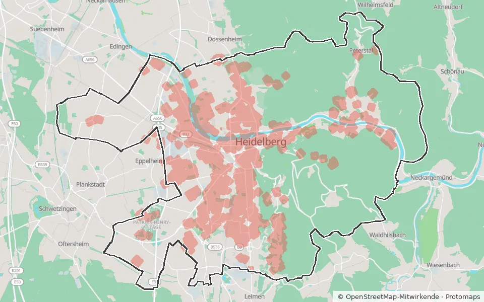
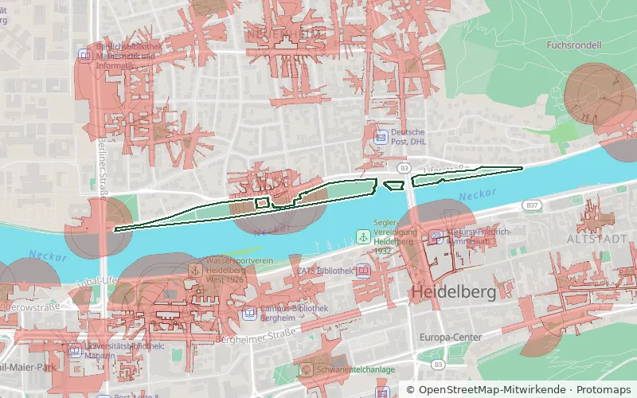
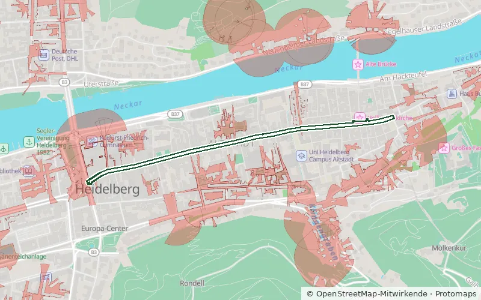
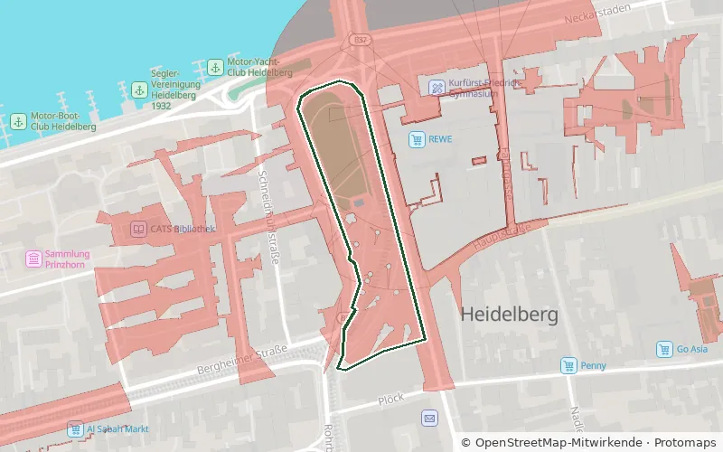
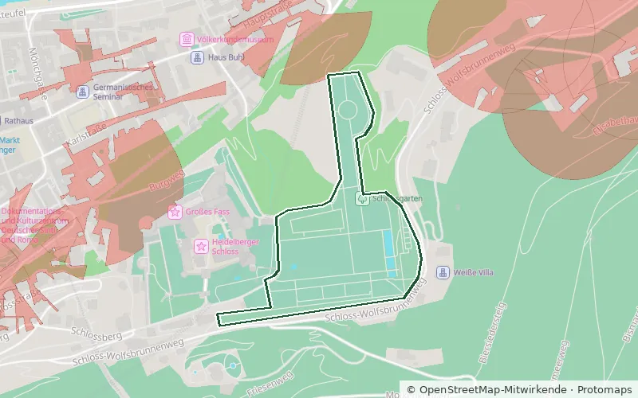
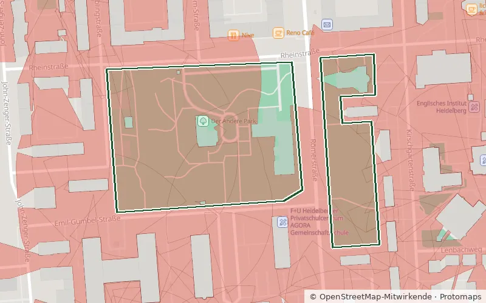
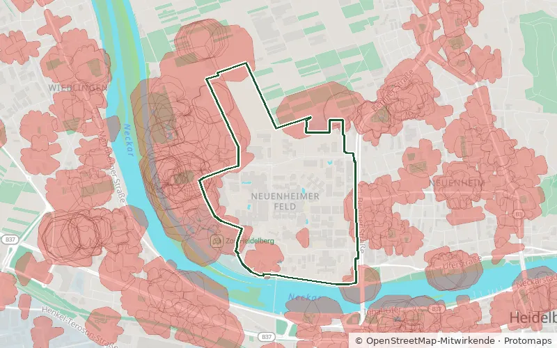

In Heidelberg ist öffentliches Kiffen auf 12 km² verboten, das sind 11,3 % der Stadtfläche von 109 km². Grund sind 904 Einrichtungen wie Schulen und Spielplätze: In ihrer Sichtweite, bis 100 Meter vom Eingang und ohne Gebäude dazwischen, verbietet § 5 KCanG den Konsum. Dazu kommen die Fußgängerzonen von 7 bis 20 Uhr und überall die Gegenwart von Minderjährigen.
Dass der Anteil niedriger ist als in vielen Großstädten, liegt am Wald: 42 % der Stadtfläche sind Wald, vor allem an den Hängen von Königstuhl und Heiligenberg, und dort liegen nur 2,9 % in einer Zone. Ohne den Wald gerechnet sind es 17,5 %.

Woher die Zonen in Heidelberg kommen
| Einrichtung | Anzahl | Zonenfläche |
|---|---|---|
| Schulen | 66 | 2,4 km² |
| Kitas und Kindergärten | 148 | 2,9 km² |
| Kindertagespflege | 17 | 0,2 km² |
| Spielplätze | 258 | 4,4 km² |
| Kinder- und Jugendeinrichtungen | 18 | 0,4 km² |
| Sportstätten | 397 | 6,5 km² |
Jede Art für sich gezählt, Überlappungen also mehrfach. Anbauvereinigungen nur, soweit in OpenStreetMap eingetragen.
Den größten Teil machen die 397 Sportstätten aus, von Sportplätzen über Turnhallen bis zu Fitnessstudios, gefolgt von 258 Spielplätzen und 148 Kitas.
Anbauvereinigungen fehlen in der Tabelle: Eine erlaubte Anbauvereinigung gab es in Heidelberg nach Auskunft der Stadt im Juli 2025 nicht, der einzige Antrag beim Regierungspräsidium Freiburg wurde zurückgenommen (Antwort der Verwaltung im Gemeinderat).
Neckarwiese und Neckarufer
Von der Neckarwiese in Neuenheim, zwischen Theodor-Heuss-Brücke und Ernst-Walz-Brücke, liegen 28 % in einer Zone, gemessen an der Rasenfläche, wie sie in OpenStreetMap eingetragen ist (5 ha). Die Zonen kommen von zwei Spielplätzen, darunter dem Wasserspielplatz, und von den vier Beachvolleyballfeldern auf der Wiese, die als Sportstätten zählen; am westlichen Ende kommt ein überdachter Skatepark dazu. Der größte Teil der Wiese bleibt frei.

Die Satzung für das Neckarvorland regelt Musik und Gruppen in der Nacht, zu Alkohol oder Cannabis enthält sie nichts (Neckarvorlandsatzung). Auf den Spielplätzen selbst ist nach der Spielplatzsatzung der Stadt und seit Juni 2026 auch nach Landesrecht jedes Rauchen verboten (siehe Rauchverbote in Baden-Württemberg). Stadt und Polizei nennen den Wasserspielplatz und seine Sichtweite ausdrücklich als Verbotszone (Brief an die Schulen, April 2025) und kontrollieren auf der Neckarwiese den Jugendschutz, zuletzt bei den Schulabschlussfeiern im Juli 2026 (Stadt Heidelberg).
Auf einem 100 Meter breiten Streifen Land entlang des Neckars liegen 22 % in einer Zone.
Altstadt und Bismarckplatz
Die Altstadt hat einen amtlich festgelegten Fußgängerbereich: Die Fußgängerbereichsatzung der Stadt zählt 62 Straßen und Plätze auf, darunter die Hauptstraße von der Sofienstraße bis zum Kornmarkt, den Marktplatz, den Universitätsplatz und die Untere Straße (Straßenverzeichnis zur Satzung). 29 davon bilden den „reinen Fußgängerbereich“, die übrigen sind Bereiche mit Fußgängervorrang. Ob auch diese zweite Gruppe als Fußgängerzone im Sinne von § 5 KCanG gilt, sagt keine Quelle, die wir gefunden haben. In der Fußgängerzone ist Konsum zwischen 7 und 20 Uhr verboten, ganz gleich, was die Karte rot zeigt; blau sind die Fußgängerbereiche aus OpenStreetMap.
Von der Fußgängerzone der Hauptstraße liegen nur 11 % zusätzlich in einer Sichtweiten-Zone. Universitätsplatz, Marktplatz und Kornmarkt liegen außerhalb jeder Sichtweite; nach 20 Uhr verbietet § 5 KCanG dort den Konsum also nicht, solange keine Kinder oder Jugendlichen in der Nähe sind.

Ganz anders der Bismarckplatz, der nicht zum Fußgängerbereich gehört: 95 % des Platzes liegen in einer Zone. Sie kommen vom Kurfürst-Friedrich-Gymnasium mit seiner Sporthalle an der Ecke zum Neckar und von mehreren Fitnessstudios rund um den Platz. An den Haltestellen von Straßenbahn und Bus ist das Rauchen seit Juni 2026 ohnehin verboten.

Schloss, Philosophenweg und Thingstätte
Der Schlossgarten (4 ha, so wie er in OpenStreetMap eingetragen ist) liegt zu 0 % in einer Zone, ebenso die Thingstätte auf dem Heiligenberg (0 %). Am Philosophenweg sind es 7 %, vor allem am unteren Ende in Neuenheim, wo Spielplätze am Weg liegen.

Eine Hausordnung für Schloss und Schlossgarten haben die Staatlichen Schlösser und Gärten nicht veröffentlicht. Die Thingstätte sperrt die Stadt seit 2018 in jeder Walpurgisnacht, vom 30. April um 16 Uhr bis zum 1. Mai um 6 Uhr (Stadt Heidelberg).
Bahnstadt und Südstadt
In den neuen Stadtteilen ist es umgekehrt. In der Bahnstadt liegt die Promenade zu 100 % in einer Zone, in der Südstadt Der Andere Park zu 86 %. Kitas, Schulen und Spielplätze liegen hier dicht beieinander: Im und am Anderen Park sind es fünf Spielplätze, drei Kitas und drei Schulen.

Hochschulen
Hochschulen sind nach § 5 KCanG keine Verbotsorte. Auf dem Campus Im Neuenheimer Feld der Universität (110 ha samt Kliniken) liegen trotzdem 14 % in einer Zone: Zwei Kitas und ein Spielplatz liegen auf dem Gelände, das Sportgelände der Universität und weitere Sportanlagen am Rand. Der Altstadt-Campus um den Universitätsplatz liegt zu 4 % in einer Zone, der Campus Bergheim zu 38 %, der Campus der SRH in Wieblingen zu 48 %.

Die Hausordnung der Universität verbietet das Rauchen in Universitätsgebäuden; zu Cannabis oder zu den Freiflächen des Campus sagt sie nichts (Mitteilungsblatt des Rektors 14/2017).
Feste und Veranstaltungen
Eine eigene Regel der Stadt zu Cannabis auf dem Heidelberger Herbst, dem Altstadtfest oder dem Weihnachtsmarkt haben wir nicht gefunden. Wo viele Kinder und Jugendliche sind, greift das Verbot in ihrer Gegenwart (§ 5 Abs. 1 KCanG); zum Weihnachtsmarkt 2024 hieß es, der Kommunale Ordnungsdienst werde besonders auf Cannabis achten (HEIDELBERG24, November 2024). Das Rauchverbot des Landes gilt in Bier-, Wein- und Festzelten nicht.
Was sonst noch in Heidelberg gilt
Seit Juni 2026 ist gerauchtes Cannabis in Baden-Württemberg auch auf Spielplätzen, Schulgeländen und Kita-Grundstücken, an allen Haltestellen, in Freibädern, Zoos und öffentlich zugänglichen Innenräumen verboten, bis zu 200 Euro (Land Baden-Württemberg). Auf den städtischen Spielplätzen, zu denen auch Bolzplätze, Skateanlagen und Pumptracks zählen, verbietet außerdem die Spielplatzsatzung Rauchen und Alkohol (Spielplatzsatzung).
Eigene Verbotszonen für Cannabis hat die Stadt nicht festgelegt (Stand 26. November 2026). Die Polizeiverordnung der Stadt verbietet seit 2021 auf Straßen und in Anlagen den „öffentlichen Konsum von Betäubungsmitteln“ (Polizeiverordnung, § 4). Cannabis fällt seit April 2024 nicht mehr unter das Betäubungsmittelgesetz; ob die Stadt die Regel trotzdem darauf anwendet, haben wir nicht herausgefunden. Auf ihrer Seite zu den Konsumverbotszonen erwähnt die Stadt sie nicht.
Einen Bußgeldkatalog für das Cannabisgesetz hat das Land nicht; das Gesetz erlaubt bis zu 30.000 Euro. Im benachbarten Mannheim, das zum selben Polizeipräsidium gehört, nannte die Polizei im Juni 2026 Bußgelder von 300 bis 1.000 Euro als üblich (Polizeipräsidium Mannheim). In Heidelberg kontrollieren der Kommunale Ordnungsdienst und die Polizei; Zahlen zu Verstößen gegen § 5 KCanG haben sie nicht veröffentlicht.
Häufige Fragen zu Heidelberg
Wo darf man in Heidelberg kiffen?
Nach § 5 KCanG außerhalb der roten Flächen, etwa auf dem Philosophenweg (7 % in einer Zone) und an der Thingstätte (0 %). Tagsüber nicht in der Hauptstraße und den anderen Fußgängerbereichen, nie in Gegenwart von Minderjährigen, gerauchtes Cannabis außerdem nicht an Haltestellen, auf Spielplätzen, Schulgeländen und in Freibädern. Weiß heißt nicht sicher erlaubt: Hecken, Bäume und fehlende Einrichtungen kennt die Karte nicht.
Darf man auf der Neckarwiese kiffen?
Der größte Teil der Wiese liegt außerhalb der Sichtweiten-Zonen; rot sind vor allem die Bereiche um die Spielplätze und die Beachvolleyballfelder. Auch auf dem freien Teil verbietet § 5 KCanG den Konsum in unmittelbarer Gegenwart von Kindern und Jugendlichen, und die sind an warmen Tagen oft da.
Wie genau ist das?
Täglich aus OpenStreetMap gerechnet, mit Gebäuden als Sichthindernis; die Zahlen hier sind vom 26. November 2026. Eine Orientierungshilfe, keine Rechtsauskunft (wie gerechnet wird).
Fehlt eine Einrichtung? Korrekturen in OpenStreetMap stehen am Tag darauf auf der Karte; bitte nur eintragen, was es vor Ort gibt.